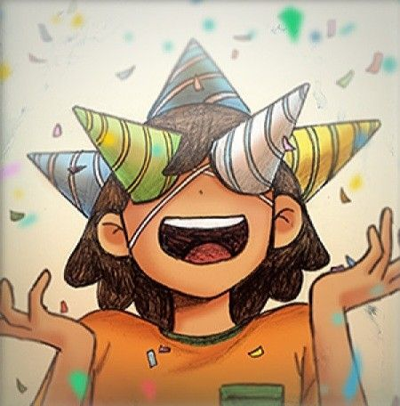

| KEL is one of the main three deuteragonists that join OMORI's party in OMORI. During his youth, KEL was a bit bratty, impulsive and rude, always getting into little tiffs with his friends. He is very competitive by nature, always wanting to win games or races, and is indeed very energetic and fast. He also thinks romance is gross and that girls have cooties. However, even though he is loud and likes to annoy his friends, he genuinely cares about them to the point of constantly protecting them with a strong sense of justice. KEL appears to share a strong bond with his brother HERO and occasionally bickers with AUBREY over petty disagreements over minor topics. He even sees the quiet SUNNY as someone who is a great person and believes the best in him.The present-day KEL still retains his happy demeanor but appears more mature and understanding towards others. He is very social and likes talking with strangers when SUNNY is busy with jobs. He constantly tries to help others in-need, which could often lead him to making rash choices at times. KEL also desires to reconnect with his old friends, notably when he encourages SUNNY to be more active and healthy. He even tries to understand AUBREY's reasons for her anger and repeatedly protects BASIL from bullies as well, displaying the same sense of justice he possessed when he was younger. |

|